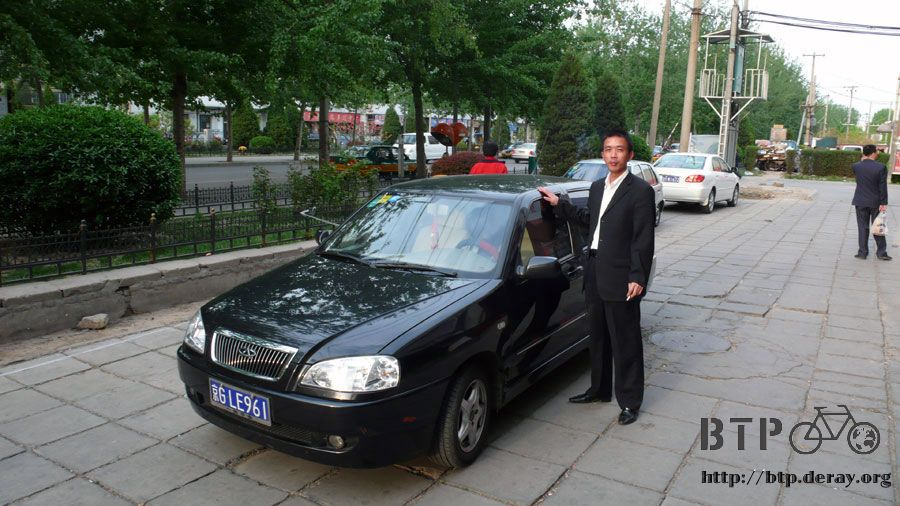
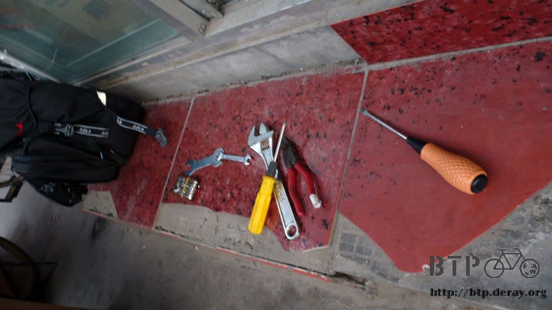
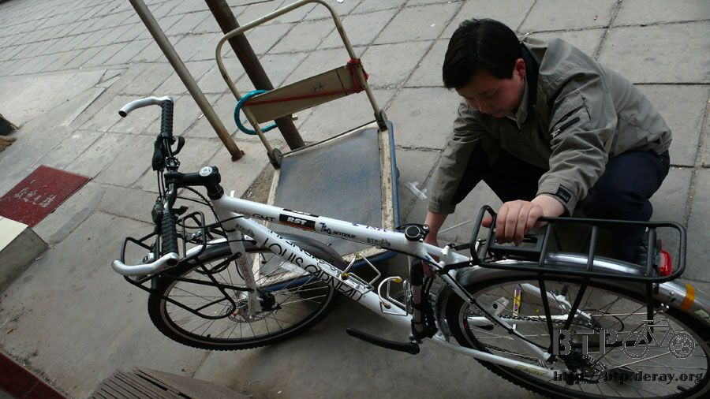
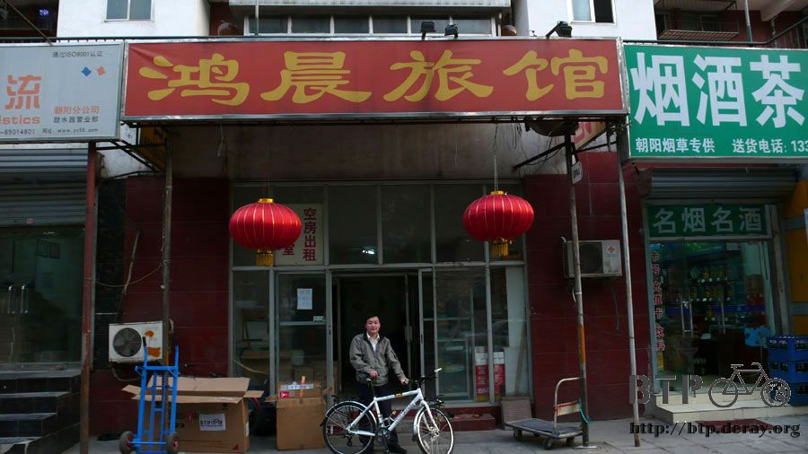

No hero here
Just like I suspected, the night prior to my departure I couldn’t sleep… After all I could take a little nap.
At dawn, I woke up earlier than my alarm clock set at 5 o’clock.
I desired to take a shower, wash myself to get my stamina back.
Before I could shower, I had a stomach upset and without breakfast it unwillingly threw up some stomach fluid.
I felt the spasm and shakes of my stomach and a bitter acid flavor in my mouth,
It woke me up immediately and brought me back to reality. I am not dreaming.
Also this announced the truth that in 3 more hours I will depart from Taiwan and start my adventure.
I wanted to shout Bring it On! Because I am about to take my first step!
No matter what you do, the first step is the hardest that’s why most people retreat before even stepping out.
After cleansing myself, my friend took Misasa and I to the airport terminal 2 with his little truck
Before laying down yesterday night I double checked my luggage till 0100,
but I know for sure that I forgot something.
Within 10 minutes away from home I realized that my glasses and camera are all in a box
This means that there will be no pictures for the good time
and I will be half blind for the rest of the trip till I clear custom in Beijing.
That’s not a big deal at least I brought them with me and I remember where I put them.
But I also left the good luck amulet that my aunt troubled to go to the temple and asked it for me.
Half way we returned home to get that amulet.
Rush and nervous in the morning is not a good sign. Is there anything else that I forgot?
With thoughts like a traffic jam we arrived at the airport before 0700.
Went to EVA airline’s counter and checked in my luggage and got my boarding pass.
Yesterday night at RST, teacher Hong sir,
besides teaching me how to change a bike chain I also learned to dissemble and assemble my bike.
After taking apart the front tire, front fender, front break, front pack holder,
seat and steering, we could finally fit the bike in the box.
I will carry on a back pack with me, the other 3 big pack, a small pack,
sleeping bag, helmet and other stuffs went into another box
Make 2 simple boxes. Either I lose everything or everything will land safely into my hand.
Back to the EVA Airline counter. After putting the boxes on the weight it displayed 41.9Kg.
The limit weight for one passenger’s luggage is 25Kg
Therefore it’s overweight by 17Kg. Even though I knew that my luggage will be overweight but it still was out of my calculus.
Without the bike’s weight of 16Kg and add my carry on pack weight of 7Kg, I am taking above 30Kg of luggage on this trip.
This will be a though trip for my partner LGS-GMT the bike.
By airline rules, there’s surcharge for overweight luggage. With EVA airline’s help they allowed my limit to 35Kg
Therefore I only paid for 7Kg and it cost me 2400NT
Ming said that he wouldn’t be able to wake up and farewell me at the airport, however for my surprise he was present.
We chat for a while. Thanks to him that this trip will have a pleasant start
At the same time to view and deal with issues differently. I am somehow childish in contrast Ming is lot more matured.
At 8:30AM I kissed Misasa on the forehead and told her to take care of herself
and that I will be back soon and I left to catch my 9:15 flight.
Taipei to Hong Kong flight only takes about an hour just about the time needed to take breakfast.
It’s so excited to arrive to Hong Kong airport! It’s such a gorgeous airport!
This is my first time in Hong Kong, however I don’t have time to leave the airport.
I could only “eyes shop” the duty free stores in my short 2 hour transit.
I also went to the airport’s free internet cafe and waited for my 12:45 flight to Beijing.
My flight from Hong Kong to Beijing is with China Eastern Airline.
About the stewardess, I can only say sensational. China is vast of resources and that’s why we have excellent choices.
It’s noon and that means another airplane meal.
The comparison between the fine quality of the stewardess and
the meal is negatively progressive. Better are the stewardess worse is the food.
Anyways, I still finished my meal.
I even took the bread and the butter that the passenger next to me left for emergency food.
Maybe China Eastern knows that the food wasn’t good enough,
so they gave us Haagen Dazs Ice Cream for desert. That’s quite a difference.
I changed seat with the grandpa sitting at the window sit next to me
(He gave me the left over bread). I looked out and there’s China.
My first impression was “So yellowish. It’s a country full of yellow mud.
I arrived at Beijing airport at 4 o’clock in the afternoon.
It’s very obvious that the airport’s operation flow is not well designed.
Specially when I just passed by Taiwan and Hong Kong airport.
After disembarking, a bunch of passenger stuck at the small electrical stair
and the stair beside it. And the immigration is an exaggeration.
It’s like a Mecca, no matter the Chinese waiting line or the foreigner waiting line, is all long and full.
After waiting for a long while in this long line, the immigration will verify your documents.
After that there’s a service feedback button.
The options are: Very Satisfied, Satisfied, Regular, Slow, No Good.
I pushed at the SLOW button for as much times as I could, then left happily.
Finding my luggage is another lesson to be learned. I have two luggages;
one is regular stuff which I can pick it up at the belt just like everybody else.
But my bike is considered as a over sized luggage which supposed to be hand carried to another luggage pick up zone,
just like my last trip at France; where they carried my bike to a pick up zone even earlier than my other luggage.
At that time getting my bike was a huge relive.
Now at Beijing airport, I pushed the luggage cart round and around and I just can’t find my bike.
My luggage came out of the luggage belt but where is my bike?
I waited and waited till the belt stopped and no more luggage where coming out of the belt
and I still haven’t seen my bike. I was petrified.
I grabbed a person who looked like someone who is in charged of carrying luggage
and asked him: “there’s a box with a bike on this flight can you tell me where it is?”
If he answered never seen or heard of that, then it means my bike was left at Hong Kong.
Thankfully he gave me a “oh that box is yours” expression and pointed at the end of the pick up zone
and told me “It’s over there”.
Bloody, it’s so far away. The pick up zone has 8 belts. My flight used luggage belt 7 and he took my bike to belt 1.
Anyways it’s good news and a relive for me. I thanked the guy and pushed my cart and run towards my bike.
At the same time a horrifying picture just flashed in front of me. Someone was taking that box down and BAM, dropped it.
What the heck!! That’s my bike. The box was already a little damaged when I was packing it yesterday.
I stick so much fragile sticker to it but it was in vain. Nobody cared.
Whatever, I was happy to get it back. My luggage, my bike and me, all present.
My watch marked 5 o’clock in the afternoon. I asked information counter is there’s road to ride bike to Beijing.
The three ladies looked at each other and told me:
“There’s road (not highways) but you have to ask other people we don’t know where it is.”
My original plan was to take airport bus to the city and then assemble my bike at the sidewalk.
This is can be accomplished in France because nobody will take advantage while you are working with the bike
and steal your bags and when you ran frustrated after that guy, another guy grab your bike and scatters.
However this is China. A beautiful country which I respect and have high expectation
but at the same time I am also very cautious
Without knowing my route from airport to Beijing, I have to get there and find a cheap place to stay for the night.
I don’t even know where are the hotels therefore nothing is certain for the moment.
With my luggage and my bike on the cart, the time 5 o’clock, I threw myself options.
Should I spend about 30 minutes to 1 hour to assemble the bike and try to ride 30Km about 2 hours.
If everything is smooth I will arrive to Beijing at about 8o’clock and search for a place to spend my first night in Beijing.
Or should I take the airport bus to Beijing. After getting there take the risk of getting robbed on the sidewalk,
assemble my bike and find a place to spend the night.
Seems like there’s only two options, each one with its costs and some risk.
While I was trying to figure out what I wanted to do a guy in suit approached and asked me “What’s in the box?”
I looked at him even he was wearing suit but he must be taxi driver looking for its prey. I replied “bike”
He said: “You are going to Beijing right? I will take you. Let’s go~”
I didn’t agree and haven’t tell him my destination and he is already asking me to follow him.
“How much you will charge me?”
I didn’t deny him instead I asked for the fare because this might be the third option to my choices.
“All this stuffs… For you 300 RMB!”
“That’s too much; I don’t have that much money.” I turned away looking for the bus station.
Just as I expected, after 5 seconds he chased me down “so how much you willing to pay?”
“150”
Even if you are not a bargain expert and you don’t know about the regular prices,
you only have to remember the principal of “50% off”.
Just go for half of whatever they are charging you.
He waved his hand and left me right after I told him my offer. Well,
it’s not bad either; at least nobody is bugging me now.
I pushed my cart in search of the bus station without finding it.
And just when I was going to turn back the guy brought a young, tall skinny guy towards me.
We spoke at the same time.
“That’s it, 250!” The taxi driver said.
“200!” I shouted out at the exact same time.
He then shake his head in disapproval, sighed and said “220, shall we go?”
I accepted this offer by the driver; however is the skinny tall young man who took me.
I questioned him at once “you are not taking me?” was he only in charged of negotiation?
“His my younger brother, it’s the same as I take you.
You have big luggage only his car can take you. My little taxi won’t fit.” He replied.
I followed his “brother” and shouted back to him
“your brother? You don’t really look alike. Are you sure he is your brother?”
Other taxi drivers laughed and said in lower voice
“Of course they don’t look alike. Not from the same mother…”
I followed him and walked pass the road in front of the airport and entered the parking lot.
Three floors below it’s already dark enough to alert me.
What kind of driver will park his car in such place?
After getting the customer, you make him walk so far? Is he going to rob me in the parking lot?
“Here it is, this is the car”
When I was preparing myself for a brutal robbery, I saw his black sedan.
My packs go in the back seat and my bike in the truck.
Truly this is car is larger and my bike fit in the truck with a little part coming out without bothering.
I settled myself in the car and asked for his name.
His name is Anthony from Beijing, He drives customer from airport to hotels.
The other guy was one of the few who had access to the airport lounge.
Therefore he is in charged of getting all the customers and then assign to others.
Then I told Anthony that I am from Hong Kong and the box in the truck is a bike and that I plan to ride from Beijing to Xian.
We chatted more and more and the conversation just grew.
Anthony is a very interesting guy. I asked him why Beijing accent sounds so nice.
He said that is because they speak in “longer” tune.
And that people from Guangdong like me (he believed that I am from Hong Kong) speaks short tunes word by word.
Immediately I learned the catch of Beijing accent. I have to speak in longer tune.
Within our lengthy conversation I ask Anthony that each trip’s earning is two o three hundreds,
therefore he must have a very substantial salary.
He told me that the fare he collects in a while from me will be turned in. His salary is 2000RMB per month.
If by chance he tumbles to a generous customer with a big tip then there’s some extra earning for him.
I also asked him that even this is Airport Highway, why the speed is so low.
Anthony told me that there’s a toll ahead and the fee is 10 RMB.
I wondered why he was telling me this detail. Was he introducing the toll to me?
Then he said: “10 RMB please. You have to cover this”.
I was surprised that even paying the taxi fare when passing through highway toll I have to pay. This is outrageous.
Fare is fare and toll fee is toll fee. This is distinguished very clearly.
In my wallet I only have the 300RMB that Bianca gave me. Taxi fare is 220 and 10 more for the toll fee.
I still have to find a place to spend the night. What should I do now?
Anthony admires me and considers that traveling with a bike alone is very manly.
Therefore I told Anthony that I only have 300RMB with me,
and if he could help me find a hotel to spend the night
then what is left of 300RMB after the hotel and Taxi fare will be his tip.
Anthony told me that in Beijing the cheapest hotel costs 300RMB per night.
With luck you can find a 158RMB per night hotel.
It’s almost impossible to find a place with my budget.
By the hotel classification it’s hotel, motel and then?
I hope it’s not on the street. There’s a place called dormitory.
It cost about 50RMB per night.
He called his “sister” and asked if there’s any room left.
Unfortunately there’s no vacancy.
Doesn’t matter where it is as long as it’s close to Beijing even if it’s 10Km away from Tian Tan (Temple of Heaven).
As a native of Beijing, it’s easier for Anthony to find a cheap hotel than riding around by myself.
Somewhere in Beijing Anthony found a place that he remembered that it’s cheap.
After getting there he instructed me to stay in the car because my foreign
accent will not help to bargain. He will go scout for me.
I stayed in the car and raised my head and read “Bright Morning Hotel”. It’s a hotel; I don’t think it will be cheap.
After a minute, Anthony came back with a smile.
I asked him how much the night was. He told me laughing that it’s 55 bucks the night.
Better for me. It’s only the first day and I found a cheap hotel and it’s quiet around here.
Then I can assemble my bike put it back to my room.
And that is how I solved three problems at once: get to Beijing, assemble my bike and a place to spend my first night.
I was just feeling relaxed when that “not so easy” feeling came to me.
The clerk of the hotel asked me for identification to check me in at the hotel.
And of course when he asked for identification he didn’t mean Taiwan passport.
I shamefully took out my Taiwanese permit and told him in low voices
that I am from Taiwan, trying to avoid Anthony hearing.
Then the guy asked me from Taiwan? Then you don’t have identification?
Outside Anthony herd his comment and came in to help.
“What is the problem?” he asked “He is from Hong Kong”
Full of embarrassment I explained to Anthony that I am actually from Taiwan.
The clerk was nice enough to let me stay anyways because foreigners are not allowed in this type hotel.
55 per night and I paid 60. 5 RMB as deposit.
Therefore, from my 300RMB there’s taxi fare of 220,
the toll fee of 10, 60 for the hotel there’s only 10 bucks left for Anthony’s tip.
Fate brought us together, so he was very happy anyways. He still admires me for riding bike alone.
Anthony didn’t return to the airport at once.
He stayed to watch me assemble the bike because he wanted to see what it looks like.
Then I finally could open my luggage box and take my camera for today’s first picture.
Anthony saw my car and exclaimed: “This is an excellent bike. It sure is expensive right? Does it cost 1000RMB?”
I don’t think it’s good to tell him that it costs about 5000RMB.
So I nodded and told him that it cost around 1000RMB and added that it’s a regular bike.
Then he asked: “What brand it is? I have never seen it before”
I felt that it would be too complicated to explain that my bike is Louis Garneau from Canada,
so I told him that I didn’t know what brand is that and
“I bought it because it’s cheap and I liked it.”
Thanks to Anthony for helping me to find this hotel and made the first step of my bike trip without big obstacles.
In general it seems to be going nicely.
Before he went back to work I took a picture of him.

Bright Morning Hotel’s Clerk is called Mario.
He saw that one of my luggages is a bike and I was getting ready to assemble it.
He took out a bunch of tools and helped me with the screws.
I made some mistakes in some spots and he was first to correct me. What a shame~~

A gentleman of about 60 years old approached us watching us assemble the bike.

We chatted while we were assembling the bike.
I also told Mario that I was going to ride from Beijing to Xian (I also only told him till Xian)
The elder’s last name is Zhao so Mario called him Zhao Sir and I followed.
I am 26 years old in Taiwan but in mainland China I am considered 27. Mario is 25 younger than me.
Zhao Sir asked me where I am from. I replied that the answer is a bit sensitive.
Mario took the liberty to answer for me. He told Zhao Sir that I am from Taiwan.

Zhao Sir laughed and said what so sensitive about that?
With Zhao Sir we are considered the three musketeers assembling the bike.
From front break, front tire, front fender, front stand, pedals, handlebar, seat, one by one we assembled.
The carelessness handling during flights bent my rear fender. It severely rub against the back tire when I ride it.
Mario and Zhao sir spend a while helping me to adjust the fender till it’s back to normal position.
I test ride the bike after assembly. It’s perfect. I lowered the seat and let Mario and Zhao sir to test ride it.

After the test ride I wanted to take the bike back to my room.
Mario didn’t give the key only told me that it’s room 144 and told me to go down someone will open for me.
Room 144 is not on the first floor like it usually is.
And it certainly is not on the 14th floor but on third floor down to the basement.
There are about fifty rooms down the basement.
I will stay in a single which is not as small as I imagined.
The hotel is somehow populous; I believe that it’s about 80% full.
There are one single bed, one bed side table, one chair and a reddish color television in the room.
The ceiling’s paint is already falling. It’s stylish in a way.

After settling my bike in the room, I went back upstairs to bring down my packs.
I took half of them and Mario helped me with the other half.
I took the chance to ask Mario what he is going to eat for dinner that I would like to join him.
My idea was that since there’s a local friend I might as well go with him and eat something economic.
I organized my packs after getting back to my room.
I watched China’s Central News. (This is a very cool channel to bad that we don’t have that in Taiwan)
Beijing at night is very cold. I am at third floor down the basement and the coldness just overwhelms me.
Thank God there’s a warm blanket for me to hide inside.
Around 8 o’clock, Mario knocked my door asking me to join him for dinner.
My stomach was already making those complaining sounds.
I dropped what I was doing and went upstairs with my slippers.
I thought that Mario was going to take me to a cheap local restaurant.
Since I finished up my 300RMB in my first day I grabbed another 100 bill expecting to get some change too.
I got upstairs to the counter and I realized that we were not going to a restaurant.
Mario cooked few dishes and warmed few white buns and Voila! Dinner it is!
“I made this dish myself, taste it, hope it suits you.”

Zhao sir also joined us for dinner and chat.
Mario made stir fried bean sprout mixed with Chinese ham and yam leaves.
Together with the white bun, this meal is far better than what I had on airplane. I was so full.
Zhao sir asked if I would like a drink. “Want some?”
I modestly answer: “I can handle a couple of drink.”
『Zhao sir laughed and said: “Said and done then, Mario, please buy 2 more glasses.”
Mongolian wine (Alcohol 38%, 1.5RMB a glass) with Mario’s dishes and the white buns.
As a foreigner I wasn’t truthful about my identity.
I didn’t admit that I am from Taiwan to avoid any unnecessary troubles.
Zhao sir told me that I am doing the right thing.
It’s better to stay low profiled. There are a lot of people
and all king of people in China therefore it’s necessary to be cautious.
I found out that Zhao sir was a Kuomintang party member,
when Kuomintang was retreating to Taiwan; he had a plane ticket with him.
But he couldn’t leave his mother alone in China so he decided to stay.
And because of his past membership, he was sent several times to Hebei for labor reform which summed up 3 years.
He asked me if I did the military service. I did and I was in Military Police Command.
He then requested me to sing some Kuomintang’s party songs. He really missed it.
But I only knew our Military Police exercising songs and other songs invented by fellows in the command.
I really didn’t know how to sing Kuomintang’s song.
I had a 100 bill with me that needed to be changed in to smaller bills;
otherwise I won’t be able to use it because no one will have change for that.
I planned to use that for dinner and go a mini market to buy some supplies and get some change back.
Zhao sir told me that my accent is not good enough people will know that you are not local and give you fake bills in return.
He told me that if I needed anything just ask Mario to go for me
and that if I only needed some instant noodles Mario has that at the hotel. Mario wouldn’t give me fake bills.
Enjoying the salty food and the sweetened wine, I am actually filled with their hospitality.
Mario asked me what I was going to do once I get to Xian and if I wanted him to keep the empty boxed for the return trip.
He wondered how I was going to accommodate my luggage.
I told him that after my departure tomorrow, I will not come back to Beijing.
Zhao sir asked: “Then where are you going?”
I told them that I was going to take the silk trail to Urumqi. They dropped their chopsticks.
“How long you will ride?”
“There’s no rush. I will go slowly and one day I will get there.”
“After you get there you won’t return to Beijing either?”
“mmh, (I confirmed with my mouth full of bun and bean sprout).”
After swallowing the food, I continued “I will keep riding to Kazakhstan”
“And then?” The two of them looked at me in amaze.
“Then I will continue to Russia, then to Ukraine and then Poland.”
“Where the heck you are going? Is there a final destination?”
This expression sounded to me a little ridiculous.
“Of course! If everything goes as planned I will end up in France and that’s where I use up all my energy”
We laughed and cheer each other with the wine.
After a glass of wine, I felt dazed.
Where I am? At homeland or abroad?
Who are Anthony, Mario and Zhao sir? Foreigner or compatriot?
Before and drop myself down on bed I wanted to take a bath.
However the guy in charge of the bathroom told me that I have buy bath ticket.
Well, then forget it. I just wiped myself with wet tower and that’s it.
Besides killing a zooming mosquito, I left no more feelings in my One Night in Beijing
My day started well, I arrived well,
got my gears without incident and found a place to stay for the night without hazard.
This is my first day in Beijing.
I don’t want to be represent Taiwan and I don’t want to be somebody. I don’t even want to be known or famous.
I am just a regular guy who wakes up in the morning and get stomach upsets when I am nervous.
I am a regular guy who is afraid of getting too exhausted in the first day so decided to cheat and take a taxi.
I am who I am. I am Deray who work hard and willing to bet my life to make a dream come true.
Therefore; there’s no hero here.